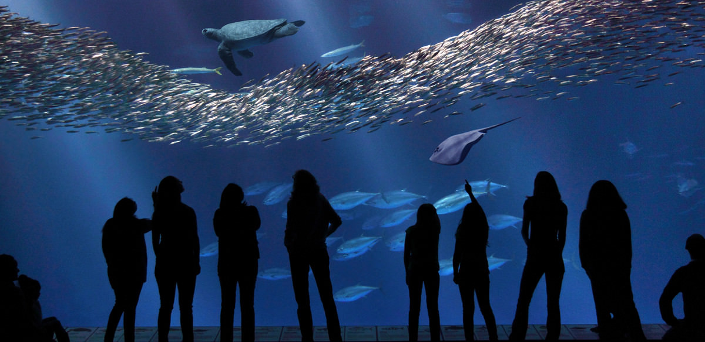

Located on the stunning coastline of Monterey, the Monterey Bay Aquarium is a world-renowned marine research and conservation center. It offers visitors a unique opportunity to explore and learn about the wonders of the ocean while promoting conservation and sustainability.
The Monterey Bay Aquarium is home to a diverse array of marine life from the Monterey Bay and beyond. From playful sea otters and graceful sea turtles to mesmerizing jellyfish and magnificent sharks, you'll encounter an astonishing variety of species as you explore the aquarium's exhibits.
One of the highlights of the Monterey Bay Aquarium is the Kelp Forest exhibit. Step into an immersive underwater world as you gaze at towering kelp stalks and encounter a multitude of fish, rays, and other marine creatures that call this unique ecosystem home. Watch in awe as leopard sharks glide gracefully through the water and colorful rockfish swim among the swaying kelp fronds.
Another must-see exhibit is the Open Sea, where you can witness the mesmerizing ballet of giant tuna, swirling schools of sardines, and the majestic movements of sea turtles. The mesmerizing jellyfish exhibit showcases a variety of these ethereal creatures, their delicate forms pulsating with vibrant colors and hypnotic patterns.
The Monterey Bay Aquarium is not only a place to observe marine life but also a hub for scientific research and conservation efforts. Through educational displays and interactive exhibits, visitors can learn about the importance of ocean conservation and how individual actions can make a positive impact on the marine environment.
The aquarium also offers various hands-on experiences and activities for visitors of all ages. Get a closer look at marine creatures in touch pools, where you can gently touch a sea star or feel the rough texture of a shark's skin. Attend informative talks and feeding sessions to learn more about specific species and their behaviors.
Make sure to take some time to explore the outdoor exhibits, which provide breathtaking views of the Monterey Bay. Spot sea lions basking on the rocks, watch seagulls soar above the waves, and enjoy the tranquil beauty of the coastal scenery.
The Monterey Bay Aquarium also features a gift shop where you can find a wide range of marine-themed merchandise, including books, toys, and sustainable products. Additionally, there are several dining options available, offering a variety of delicious meals and snacks.
A visit to the Monterey Bay Aquarium is not only an opportunity to marvel at the beauty and diversity of marine life but also a chance to deepen your understanding of the ocean and its importance to our planet. It's a place where education, conservation, and wonder converge to create a memorable and impactful experience.